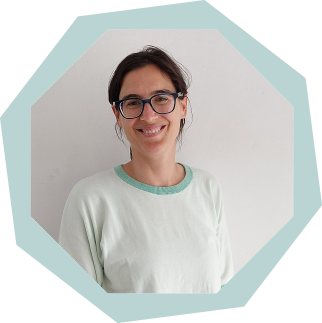
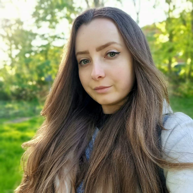
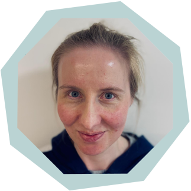

In 2005 studeerde ik af als Master in de kinesitherapie en revalidatiewetenschappen aan de KUL. Nadien volgden verschillende ‘master na masters’ in de manuele therapie aan zowel de KUL als UGent.
Via de Trigger Vzw te Brugge volgde ik de tweejarige opleiding dry needling en in 2021 studeerde ik af als Master in de osteopathie aan het IAO in Gent.
De honger naar kennis is nog steeds niet gestild. Ik blijf me bijscholen op allerlei fronten met momenteel een specifieke interesse in het vrouwelijke bekken en urogenitaal gebied.
In mijn vrije tijd probeer ik actief te blijven door te mountainbiken, klimmen, tuinieren of lopen. En in de vakanties trek ik er steevast op uit richting de Alpen. Het allerliefste sta ik op de toerskis!

Ik ben Emily De Cupere (°1997), gepassioneerd door de menselijke psyche. In 2023 studeerde ik af als Master in de klinische psychologie aan de VUB. Psycholoog zijn betekent voor mij dat ik anderen zo goed als mogelijk tracht te begrijpen en te ondersteunen doorheen moeilijke en uitdagende periodes.
Ik blijf mezelf bijscholen in actuele wetenschappelijk onderbouwde kennis en technieken. Voor een up-to-date overzicht van bijscholingen, zie het overzicht op mijn website www.psycholoogemily.com.
In mijn vrije tijd zorg ik graag voor mijn twee katten en kamerplanten, ga ik graag wandelen en fitnessen en wanneer de agenda het toe laat, speel ik weleens Dungeons & Dragons.

Ik ben Tine en studeerde af als master in de revalidatiewetenschappen en kinesitherapie aan de VUB, met optie sportkinesitherapie. Mijn eerste ervaringen deed ik op in een praktijk in Oost-Vlaanderen in de sport- en algemene kinesitherapie, waarbij ik me uitgebreid bijschoolde.
Later keerde ik terug naar mijn roots en begon ik bij UZ Leuven te werken, waar ik nu nog steeds met veel enthousiasme werk op de abdominale heelkunde en digestieve oncologie. Ik ben een groot voorstander van functionele revalidatie en actieve oefentherapie, maar blijf ook sterk overtuigd van de meerwaarde van hands-on werk. Daarom startte ik vorig jaar de opleiding tot fasciatherapeut bij Body Mind Academy. Ik wil die kennis nu maximaal kunnen aanwenden om mensen te helpen en, naast mijn werk in het ziekenhuis, ook in een algemene praktijk werken.
Ik zie fysieke fitheid als het resultaat van een gezonde levensstijl: voldoende beweging, gerichte ontspanning en bewust omgaan met voeding.
In mijn vrije tijd hou ik van sport (lopen, zwemmen, stepracer), lezen en handwerk. Ik breng graag tijd door in de natuur of kijk een oude film met mijn kat op schoot.